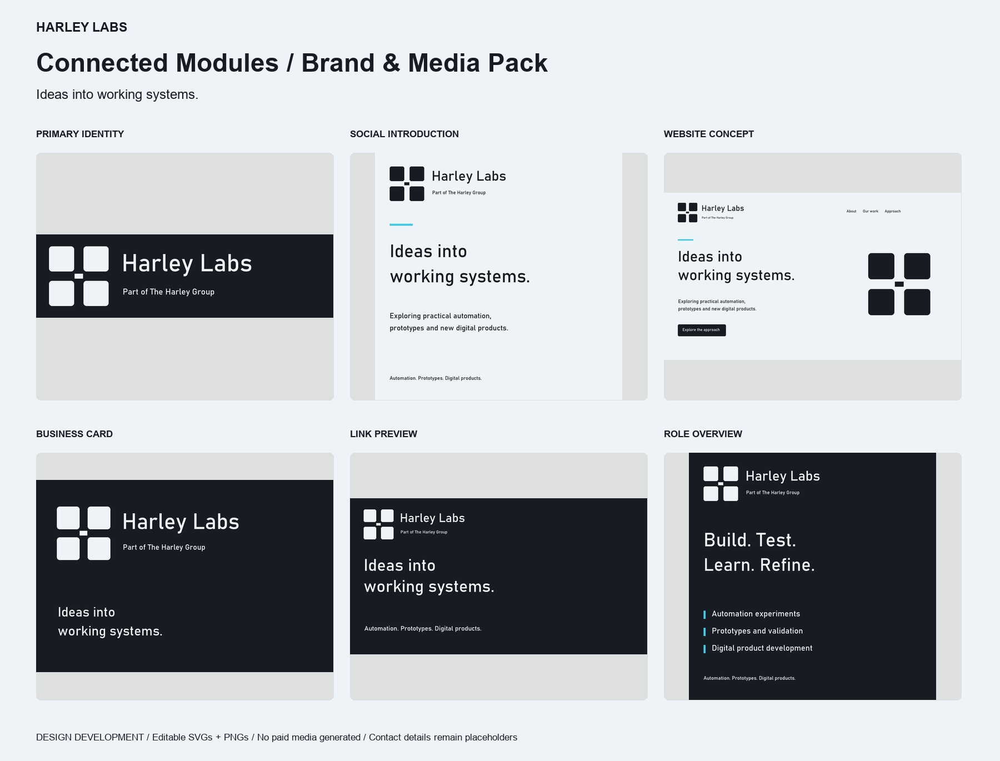

HARLEY LABS / BRAND GUIDE
Ideas into
working systems.
Prepared 21 October 2026 · Final media pack — typography option 3

Purpose
The group’s home for experimentation, automation, prototypes and new digital product development.
Visual direction
Connected Modules. Four separate modules with a small central connector: experimentation and coordinated systems. Preserve the exact module spacing; do not add glow to the primary logo.
Colour
Primary #171C23; background #EEF3F7; accent #42C9E8. Use accent sparingly. Cyan works as an accent on graphite; use graphite body text on cool white.
Typography & files
Bahnschrift for this identity; the approved installed regular weight for headings and body. Approved font: Bahnschrift. Fonts are not bundled. Web use requires appropriate availability or licensing; do not redistribute system font files. Main SVG assets use outlined lettering and do not need installed fonts. Editable-text originals are in 07-Editable-Text-SVGs. PNGs preserve the supplied design. Transparent logo variants and black/white symbols are included.
Logo rules
Keep clear space of at least one H-stem width (THG), or half one module width (Labs). Suggested minimums: primary logo 320px wide, symbol 48px. Test legibility at actual display size; use supplied small icons below 48px. Do not distort, rotate, add shadows or mix in another brand’s accent. Do not treat marks as third-party approval.
Messaging
Ideas into working systems.
Exploring practical automation, prototypes and new digital products.
Use “Part of The Harley Group” beneath the Labs wordmark in primary placements. The headline remains separate from the logo. Headlines are working brand language, not promises of measured outcomes.
Included media
Primary, horizontal and symbol logos; transparent PNGs and editable SVGs; icons and favicon; avatar; two square posts; story/reel cover; company banner; link preview; three carousel slides; website hero concept; background; business cards; A4 letterhead and cover; email signature template; messaging and CSS tokens.
Before use
Replace bracketed contact and document placeholders with verified details. RGB stationery is trim artwork, without bleed, crop marks or CMYK conversion. Cards follow an 85 × 55 mm ratio; A4 documents follow the A4 ratio. Have your printer supply a press-ready proof. SVGs are scalable; PNGs are screen companions. Preview social crops in the destination platform. Website images are concepts, not live pages. No videos were generated, no credits spent, nothing published.
Brand family
THG: charcoal, ivory and champagne. HDW: navy, warm ivory and blue, with the selected double-ring H. HL: graphite, cool white and cyan. Shared typography, spacing and restrained layouts connect the family. HDW assets remain unchanged.
Primary editable logo · Messaging and captions